Islamabad, Pakistan's purpose-built capital at the foothills of the Margalla Hills, produces the most striking numbers of any city examined in this series so far. Using the same 30-year historical reanalysis methodology applied to Karachi, Lahore, and every other city in this series, the data shows Islamabad warming faster — in every season — than any other South Asian capital studied to date.
Even more unusual: where every other city in this series shows the monsoon or post-monsoon season warming fastest, Islamabad's winter is warming faster than any other season — a genuinely distinct pattern worth digging into.
All figures below come from ERA5/ERA5-Land reanalysis data (Copernicus/ECMWF), covering 1995 through 2025, visualized through our interactive Climate Trend Dashboard.
Annual Mean Temperature
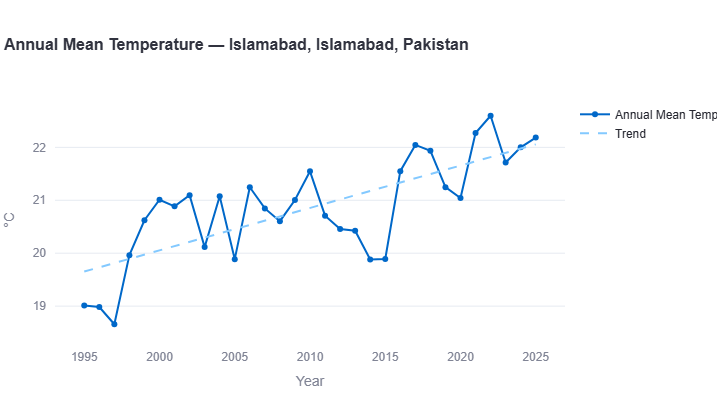
Islamabad's annual mean temperature shows a clear, sustained climb across the record. Starting near 19.0°C in the mid-1990s (with a low point of 18.65°C in 1997), the data rises through the 2000s to the low-21°C range, before a marked step-up after 2015 — from roughly 20°C to a sustained 21.5–22.6°C range through the most recent decade. The record's warmest year, 2022, reaches 22.6°C.
Key Figure: Warming Rate
This is, by a wide margin, the steepest annual warming rate of any city in this series — roughly double Dhaka's already-fast 0.30°C/decade, and nearly six times Karachi's 0.13°C/decade. As the caveat above notes, this figure likely reflects both genuine regional warming and Islamabad's rapid urban development over the same 30-year window.
Extreme Heat: Days Above 40°C
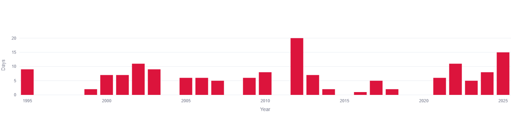
Extreme heat days show no clean trend but a genuinely noisy record, ranging from 0 in several years (1996, 2004, 2009, 2015, 2019) to a sharp outlier of 20 days in 2012 — by far the highest single year. The most recent five years (2021–2025) show a somewhat elevated cluster, including 11 days in 2022 and 15 days in 2025, though it's too short a window to call a confirmed trend on its own.
Annual Total Precipitation
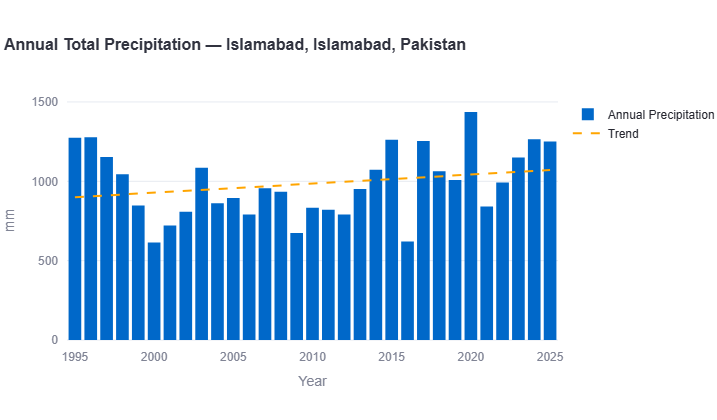
Annual rainfall shows a real but comparatively modest increase against the dramatic temperature trend — rising from a trend-line baseline near 900mm in the mid-1990s to roughly 1,080mm by 2025. The wettest year on record is 2020, spiking to nearly 1,440mm, while 2000 and 2009 both recorded some of the driest totals, around 615–670mm.
Key Figure: Precipitation Trend
A meaningful increase, though proportionally far smaller than the temperature trend — Islamabad's rainfall story is real but not nearly as dramatic as its warming story.
Seasonal Trend Breakdown
Breaking the data down — Winter (December–February), Pre-Monsoon/Hot (March–May), Monsoon (June–September), and Post-Monsoon (October–November) — reveals the season driving Islamabad's exceptional headline number.
Winter (Dec-Feb)
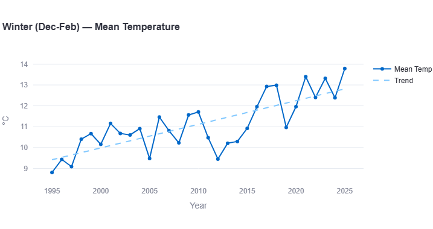
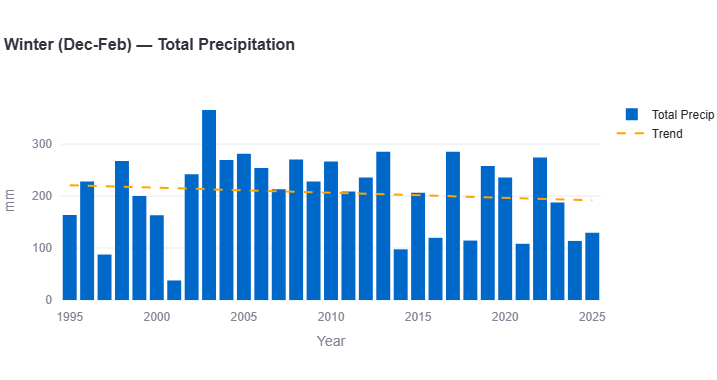
Winter shows the most dramatic seasonal shift in the entire record — rising from a trend-line baseline near 9.7°C in the mid-1990s to roughly 12.9°C by 2025. The coldest winter on record, 1995, reaches just 8.9°C; the warmest, 2025, reaches 13.8°C — a difference of nearly 5°C between the record's two ends.
Key Figures: Winter
Warming rate: approximately +1.05°C per decade (fastest season)
Precipitation trend: approximately −8mm per decade
This is the standout finding of the entire report: Islamabad's winter is warming faster than any other season, in stark contrast to every other city in this series, where winter has consistently been the slowest-changing or even cooling season. Winter rainfall, meanwhile, stays essentially flat with a very slight decline, generally ranging 40–280mm, with one dramatic outlier near 370mm around 2003.
Pre-Monsoon / Hot (Mar-May)
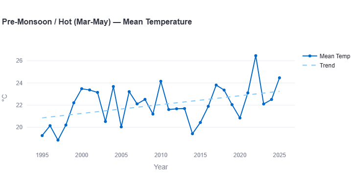
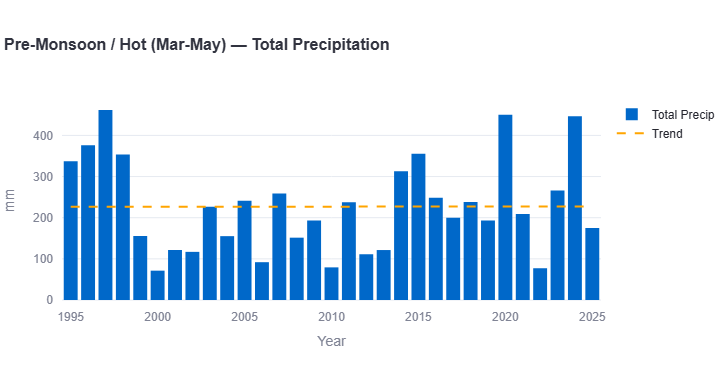
Pre-monsoon temperatures show a similarly steep rise, from around 20.8°C in the mid-1990s to roughly 23.3°C by 2025. The record's most extreme point is 2022, spiking to 26.3°C, while 1997 recorded the coolest pre-monsoon season at just 19.0°C.
Key Figures: Pre-Monsoon
Warming rate: approximately +0.83°C per decade
Precipitation trend: approximately flat
Pre-monsoon rainfall stays fairly stable around 225–235mm across the record, with 1997 standing out sharply at nearly 460mm — the wettest pre-monsoon season on record — and 2000 recording the driest at just 70mm.
Monsoon (Jun-Sep)
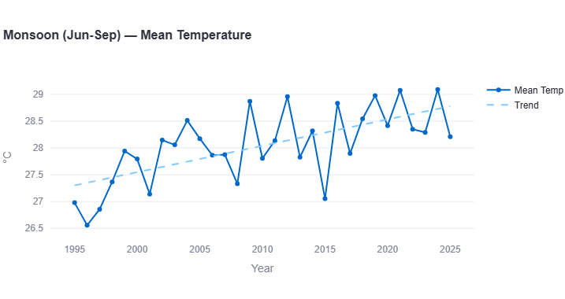
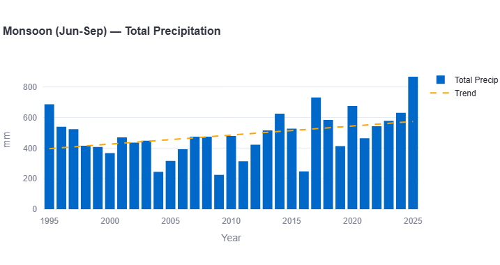
Monsoon temperatures rise from around 27.0°C in the mid-1990s to roughly 28.7°C by 2025 — a substantial increase, though notably the slowest-warming season in Islamabad's record, a reversal of the pattern found in every other city studied.
Key Figures: Monsoon
Warming rate: approximately +0.57°C per decade (slowest season)
Precipitation trend: approximately +53mm per decade
Monsoon rainfall shows a real increase, rising from a trend-line baseline near 410mm to roughly 570mm by 2025. The wettest monsoon on record is 2025 itself, reaching close to 865mm, while 2009 recorded the driest at around 230mm.
Post-Monsoon (Oct-Nov)
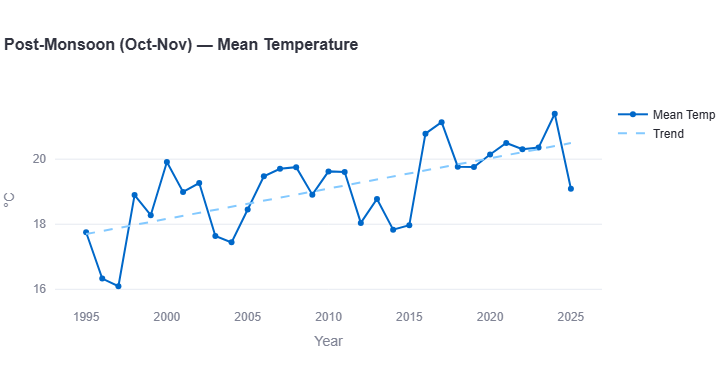
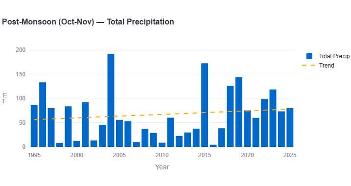
Post-monsoon temperatures show the second-fastest warming trend, rising from around 17.6°C in the mid-1990s to roughly 20.4°C by 2025. The record's low point is 1997, dropping to 16.1°C; the warmest years, 2017 and 2024, both reach close to 21°C.
Key Figures: Post-Monsoon
Warming rate: approximately +0.93°C per decade
Precipitation trend: approximately +7mm per decade
Post-monsoon rainfall stays comparatively low and stable, generally under 100mm, with 2004 standing out sharply at nearly 193mm — more than double a typical year in this season.
What This Means for Islamabad
- Winter-led warming is a genuinely unusual regional pattern. Every other city in this series shows monsoon or post-monsoon warming fastest; Islamabad's winter outpaces them all, which merits dedicated local research into what's specifically driving this — whether regional atmospheric patterns, elevation effects from the nearby Margalla Hills, or urbanization concentrated in ways that show up more in winter data.
- The scale of these numbers demands caution, not alarm alone. Given how far Islamabad's figures exceed every other city studied, treating this as a pure climate-change signal without accounting for rapid urban development would be scientifically incomplete. Both are very likely at work simultaneously.
- Even the "slowest" season here is faster than most other cities' fastest season. Islamabad's monsoon warming rate (0.57°C/decade) alone would be the fastest recorded anywhere else in this series except Dhaka's monsoon — underscoring just how much of an outlier this city is overall.
- Rainfall trends remain comparatively modest. Unlike the dramatic temperature story, Islamabad's precipitation trends sit in a similar range to several other cities in this series — the real story here is heat, not water.
Islamabad Compared to Pakistan's Other Cities
With all three of Pakistan's major cities in this series now analyzed — Karachi, Lahore, and Islamabad — a within-country comparison is genuinely revealing.
Karachi and Lahore both warm at almost identical, comparatively modest rates (0.13°C/decade each). Islamabad's rate is roughly six times steeper than either. On extreme heat, Islamabad sits between the two — its noisy 0-20 days/year average is higher than Karachi's near-zero exposure but generally lower than Lahore's consistent 20-46 days/year. And where both Karachi and Lahore show the monsoon as their fastest-warming season, Islamabad's fastest season is winter — making it the outlier on every dimension within its own country, not just regionally.
How Islamabad Compares Across the Region
With seven South Asian cities now analyzed using the same methodology, Islamabad stands alone as the steepest-warming city studied by a wide margin.
| Metric | Karachi | Delhi | Dhaka | Colombo | Kathmandu | Lahore | Islamabad |
|---|---|---|---|---|---|---|---|
| Annual warming (°C/dec) | 0.13 | ~0.15 | ~0.30 | ~0.15 | ~\u22120.04 | ~0.13 | ~0.77 |
| Annual precip (mm/dec) | +88.7 | ~+35 | ~\u2212140 | ~+65 | ~+50 | ~+10 | ~+60 |
| Fastest season | Monsoon | Post-Mon. | Monsoon | Monsoon | Monsoon | Monsoon | Winter |
| Extreme heat (\u226540\u00b0C, days/yr) | 0-5 | 20-50+ | ~0 | 0 | 0 | 20-46 | 0-20 (noisy) |
Islamabad's annual warming rate alone is roughly double the next-fastest city (Dhaka) and nearly six times the regional median. Combined with being the only city where winter, not monsoon, leads the warming, Islamabad is the clearest outlier in the entire series — a pattern that's likely part genuine regional signal and part reflection of the city's own rapid, recent urban growth.
Search any South Asian city and see its own temperature, rainfall, and monsoon trends, built from 30 years of data.
Open the Interactive Dashboard →Data Source & Methodology
All figures in this report are derived from the Open-Meteo Historical Weather API, built on ERA5 and ERA5-Land reanalysis data produced by the European Centre for Medium-Range Weather Forecasts (ECMWF) through the Copernicus Climate Change Service. Trend rates are estimated by reading the linear regression trend line plotted on each chart across the full 1995–2025 period.
Seasonal boundaries follow the standard South Asian meteorological convention: Winter (December–February), Pre-Monsoon/Hot (March–May), Monsoon (June–September), and Post-Monsoon (October–November).
As flagged above, Islamabad's exceptionally steep figures should be read alongside its status as a young, rapidly urbanizing planned city. Reanalysis datasets at 9-25km grid resolution can partially, but not fully, distinguish regional climate warming from local urban heat island effects driven by decades of new construction and land-use change — a limitation that matters more here than in any other city in this series.
Frequently Asked Questions
Is Islamabad the fastest-warming city in South Asia?
Based on this dataset, yes — its estimated annual warming rate of approximately 0.77°C per decade is roughly double the next-fastest city (Dhaka) and far ahead of every other city studied in this series.
Why is Islamabad warming so much faster than other cities?
Likely a combination of genuine regional climate warming and rapid urban development — Islamabad is a relatively young, purpose-built capital that has seen substantial construction and land-use change since the 1990s, which can independently raise local temperatures through urban heat island effects.
Which season is warming fastest in Islamabad?
Winter, at an estimated 1.05°C per decade — an unusual pattern, since every other South Asian city studied in this series shows the monsoon or post-monsoon season warming fastest instead.
How does Islamabad compare to Karachi and Lahore?
Islamabad warms roughly six times faster annually than either Karachi or Lahore, both of which show similar, more modest rates around 0.13°C per decade. Islamabad is also the only one of the three where winter, not monsoon, is the fastest-warming season.
Does Islamabad see extreme heat above 40°C?
Occasionally and unevenly — the 30-year record ranges from 0 days in several years to a high of 20 days in 2012, without a clear long-term trend, though the most recent years show a somewhat elevated cluster.